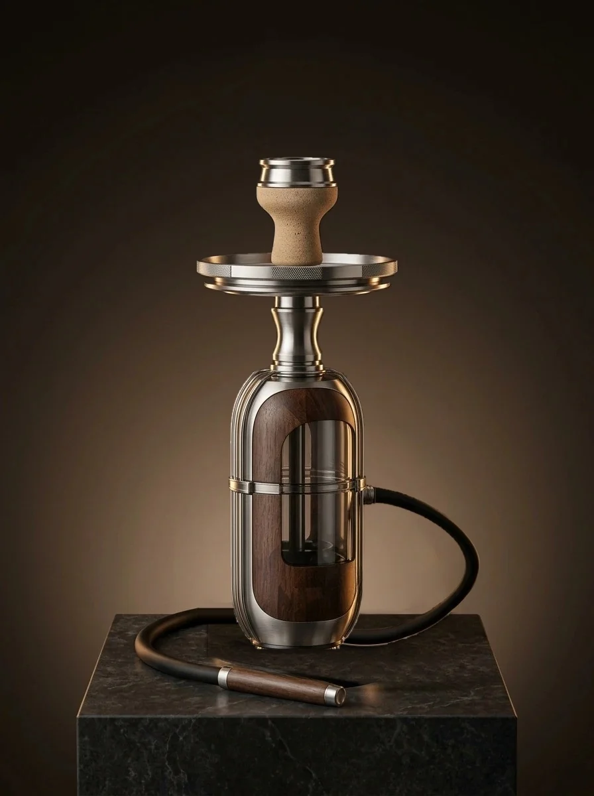

Eastman Tritan™
Kırılmaz Hazne Teknolojisi.
NARION'un 17 özgün nargile modeli (Koza, Ladin, Manolya ve tüm Seri 01 koleksiyonu) şu an El İşçiliği Kalın Cidarlı Kristal Cam Hazne, masif ahşap ve 5 eksen CNC paslanmaz çelik gövde ile üretilmektedir. Yüksek tonajlı plastik enjeksiyon kalıp yatırımı gerektiren kırılmaz Eastman Tritan™ TX1001 polimer hazne opsiyonumuz ise Faz 2 (Sonraki Proje) kapsamında Ar-Ge yol haritamızda yer almaktadır.

Neden Eastman Tritan™ TX1001 Üzerinde Çalışıyoruz?
Seri 01'de sunduğumuz el işçiliği kristal cam haznelerimize ek olarak, yoğun sirkülasyonlu kafeler için Faz 2'de devreye alınacak kırılmaz polimer hazne teknolojimiz:
Eastman Tritan™ TX1001
Sıradan pleksi (PMMA) veya polikarbonat değildir. %0 BPA içeren, nane/anason/narenciye gibi terpenik yağlarla çatlamayan, Bohemya kristali berraklığında (%92 ışık geçirgenliği) medikal kopolyester.
Insert-Molded 45° Bayonet
Koku tutan silikon contalar ve yapıştırıcılar yerine, AISI 304 paslanmaz çelik boyun bileziği enjeksiyon sırasında sıvı polimerin içine kilitlenir. Çeyrek turda (45°) hermetik sızdırmazlık sağlar.
Faz 2 Ar-Ge & Maliyet Raporu
Yoğun nargile kafelerde yıkama ve taşıma esnasında yaşanan şişe kırılmalarını sıfırlamak üzere hazırlanan Faz 2 Eastman Tritan™ teknik fizibilite dosyasını PDF olarak inceleyin.
📄 Tritan™ PDF Raporunu İndir →17 Kristal Cam Nargile Modelimizi ve Smart HMD'yi Keşfedin
El işçiliği kristal cam hazne, masif ahşap ve 5 eksen CNC çelikten üretilen 17 nargile takımımızı ve 0.0 ppm karbonmonoksitli Smart HMD akıllı lüle sistemimizi hemen inceleyin.